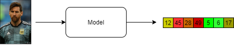
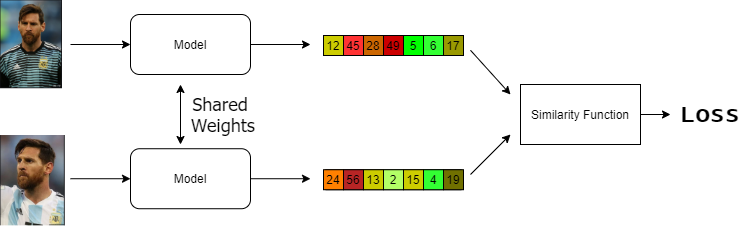
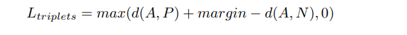
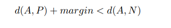
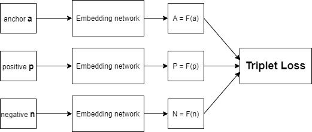
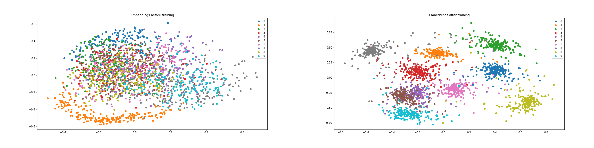
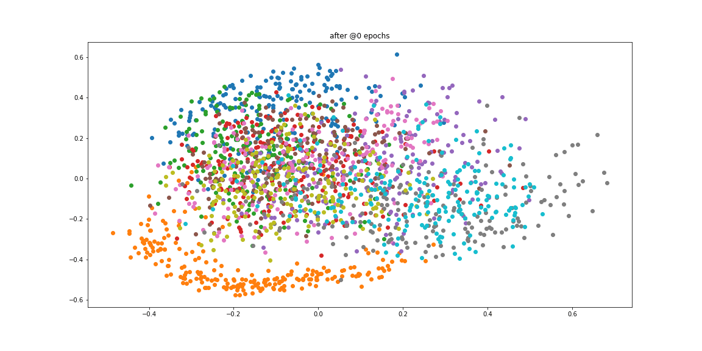

In this blog, a full guide for the triplet loss function that gained special attention lately for its importance in face recognition and verification tasks. The blog discuss the triplets variations and different mining techniques. Then, some advanced notes about the soft margin from [1], and Improved triplet loss from [2]. Finally, the visualization of trained embeddings from the GitHub Gist Mnist Embeddings Visualization using Semi-Hard Triplet Loss.
Triplet loss is always accompanied with face recognition, verification tasks. Triplet loss allows the option of dealing with variable number of classes, as in face recognition. Face recognition is the question of "who is this person from all the persons in the data-set we have". Triplet loss also raised with Siamese networks architecture.
Siamese network is the type of network that have more than one instance of the same model, to learn similarities and differences between data inputs. To illustrate more, assume we want to build face recognition model, then Siamese network is a good choice, and it would work in the following manner:
First of all, let's create a model that takes an image as inputs and output an embedding of that image.

Then let's create two instances of that model, and pass the two corresponding embeddings into a similarity function. If the two images are of the same person, then they should have high similarity, and low similarity if the two images are of different persons. Now, we can define that the loss is the complement of the similarity.

The aim of the triplet loss is to make sure of:
To explain how the previous two points are achieved by the triplet loss, let's assume we have a neural network that works as an embedding function. Assume that, an instance from our data-set is x, and the embedding function is f(x) that result in an embeddings vector X. By the same concept, another instance y would result in Y vector after being passed through f(y). d(X,Y) is a function that calculates the distance between the two vectors X and Y. If x and y belong to the same class, then our aim is to make this distance small as possible, and the opposite otherwise.
To formalize the previous requirements, we need to pick three embeddings with the following specific properties:
That's from where the name "triplets" came. Then, we need to minimize the distance d(A,P), and maximize the distance d(A,N). To do so:

The previous inequality is satisfied when the d(A,N) is bigger than the d(A,P). However, there is a trivial solution that also satisfies the equation, which is both the distances are equal to zero. To prevent the trained model from this trivial solution, a new parameter called "margin" is introduced, so that the new derivation would be like:

To formulate this requirement into a function, the hinge function is used. The hinge function assure that if the triplets already follow our requirements, then no loss (zero loss) is detected.

A practical intuition of what triplet loss do in face recognition is, if we applied the triplet loss for training the Siamese networks mentioned above, then the embeddings for two different images for the same person have a small distance between each other, and both of them having a bigger distances with the embeddings for the images of another different person.

Triplets variations means that there are more than one type of triplets that you can collect from your data. First of all, we have a base rule that defines that triplets as anchor, positive example and negative example. The variations comes when which exactly positive examples from all the positives that you can choose at each time, and which exactly the negative example that you can choose from all the negative examples that you have.
according to our rule:
we have three kind of triplets that we can generate:
Easy Triplets - these triplets results in zero loss because they are already satisfying the loss function i.e., the negative example has bigger distance than the positive example plus the margin

Semi-Hard Triplets - the negative example is not closer to the anchor more than the positive, but the negative example has smaller distance than the positive example plus the margin

Hard Triplets - The nearest negative example and the farthest positive example to the anchor are chosen

Whatever the kind of triplets you have chosen to generate, you need to choose between two different generation approaches, offline and online mining. The core difference between them is, with offline mining you generate the triplets before the training process from your original data. While in online mining, you generate the triplets after passing your data through your embedding network and works on the embeddings themselves rather than the data examples. To get in more details for each approach:
You can assume that Offline mining approach is like a Siamese network with three instances of the same embedding network. Each one of the three networks takes the anchor, positive and negative examples respectively. After computing the embeddings from each example, we calculate the required distances, then the triplet loss.
First we create list of triplets (a,p,n), whatever the type of triplets we need to generate, then we divide them into N batches. For each batch, we pass triplets one after the other, resulting in their corresponding embeddings. So we make N passes for one epoch.

One point can be added here, is that we can update the distribution of the triplets over the N batches after each epoch.
The drawbacks of this approach are:
The idea of Online mining is to overcome the computation and memory drawback of the offline mining. Thus the triplets mining is applied over the embeddings of the data, not the data itself. Therefore the architecture of the model is changed into:
First, we pass a 3N batch of input data through the embedding network to calculate 3N embedding vectors. Secondly, we create a pair-wise distance matrix for all the embedding vectors. Third, for each vector we chose a positive and negative examples to calculate the loss. Finally, we accumulate the loss from all the triplets to be out batch loss.
Worth to mention that the number of valid triplets we can get from a batch depends on how the data are distributed over the batches. In best case scenario, If we passed 3N input Batch to the embedding network, we can get at most N triplets. Thus we can divide the data classes fairly over the batches before training, but this would not be the best solution in case of imbalanced data.
There are two types of online triplets mining strategies introduced in In Defense of the Triplet Loss for Person Re-Identification. They are named Batch All and Batch Hard. An implementation for the two strategies are implemented in the great blog post by Olivier Moindrot Triplet Loss and Online Triplet Mining in TensorFlow.
Select the hardest positive (farthest positive) and the hardest negative (nearest negative) for each anchor within its batch. The also have been referred by moderate triplets, as they are the hardest but within its batch only, not over all the data-set.
Select all the possible combination of triplets (hard, and semi-hard).
Imagine a triplets where the condition d(A,N) >= d(A,P) + margin is already satisfied, then according to triplet loss rule that will result in zero. The zero we got is due to the hinge function F(x) = max(x,0). But, what if we want to further make the gap wider. In other words, push the negative example more farther and pull the positive example more closer.
From In Defense of the Triplet Loss for Person Re-Identification
The role of the hinge function [m + •]+ is to avoid correcting "already correct" triplets. But in person ReID, it can be beneficial to pull together samples from the same class as much as possible
ReID: person re-identification.
To do so, the hinge function is replaced by another function, called soft plus F(x) = 1+ex. This function knows as log1p in numpy library. check here.
The reason for the soft margin naming came from In Defense of the Triplet Loss for Person Re-Identification

The softplus function has similar behavior to the hinge, but it decays exponentially instead of having a hard cut-off, we hence refer to it as the soft-margin formulation.
In Person Re-Identification by Multi-Channel Parts-Based CNN with Improved Triplet Loss Function a new approach of calculating the triplet loss is proposed. The reason for new proposed way is to make sure that each class cover a reasonable intra-class space in the new learned space.
instances belonging to the same person may form a large cluster with a relatively large average intra-class distance in the learned feature space. Clearly, this is not a desired outcome, and will inevitably hurt the person re-id performance.
For this reason a new margin m2 which is much smaller than the first margin m1 is used to pull the instances of the same class more closer. The new triplet loss equation would be:

Note: The previous equation is from here, and it is modified to match the blog notations.
One way to gain intuition about the pushing and pulling between the embeddings vectors is to visualize them over the training process. Usually the embedding vector is of a high dimension, for example in FaceNet paper the embedding vector length was 128. Hence, a dimensionality reduction technique is applied to reduce the embedding vector size to 2 or 3 dimensions. principal component analysis (PCA) and t-distributed stochastic neighbor embedding (t-SNE) are the most popular ways used in high dimension vectors visualization.
In this GitHub Gist Mnist Embeddings Visualization using Semi-Hard Triplet Loss, the Mnist data-set are passed through an Embedding network that is trained via tensorflow addons Semi-Hard Triplet loss.
Here is the architecture from the embedding network used, taken from tensorflow addons Semi-Hard Triplet loss. One thing to highlight is the last layer in the network, which is L2_norm layer. This layer is added so that the Euclidian norm of the embedding vector is 1. This in turn forces the embeddings to be on a hypersphere.
From FaceNet
Additionally, we constrain this embedding to live on the d-dimensional hypersphere, i.e. |f(x)|2 = 1.
embedding_network = tf.keras.Sequential([
tf.keras.layers.Conv2D(filters=64, kernel_size=2, padding='same', activation='relu', input_shape=input_shape),
tf.keras.layers.MaxPooling2D(pool_size=2),
tf.keras.layers.Dropout(0.3),
tf.keras.layers.Conv2D(filters=32, kernel_size=2, padding='same', activation='relu'),
tf.keras.layers.MaxPooling2D(pool_size=2),
tf.keras.layers.Dropout(0.3),
tf.keras.layers.Flatten(),
tf.keras.layers.Dense(embedding_size, activation=None), # No activation on final dense layer
tf.keras.layers.Lambda(lambda x: tf.math.l2_normalize(x, axis=1)) # L2 normalize embeddings
])Two principal components of these embedding vectors are then visualized before and after training.

Also the embeddings are plotted before each epoch to monitor how the triplet-loss affects the embeddings of the same class to be pulled towards each other, and the dissimilar classes to be pushed away from each other.
